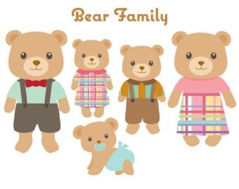

Born Benard William Honeycomb Bear in an unkwown year. Bernie is the youngest of Barry & Mary. Bernie has an older brother and sister; Ben and Maggie. Bernie was born and grew up in the woodlands, until one day Bernie; the youngest of the siblings, grew tired of being one with nature, living life in the woodlands. He decided to use his appreciation for tea to travel the world and learn all there was to know about tea.
That's when Bernie decided to set off to the outer world to learn and discover more of the beauty that is tea. He would return 3 years later, now to-"tea"-lly filled with more tea knowlegde and experience than ever.
Bernie is now based in London and lives with his 2 flatmates Emma and Jack. When not working at the tea shop, i.e. everyday of the week except Tuesdays and Wednesdays. During his free time, he likes to go to the Google search engine in the middle of the night and search for such examples "Chicken Rotiseries near me", "How to wash face properly" and "How much water is in a watermelon? ".